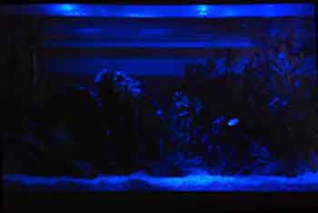
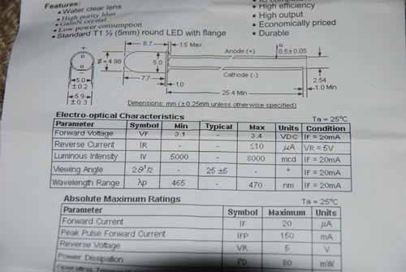
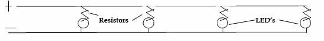
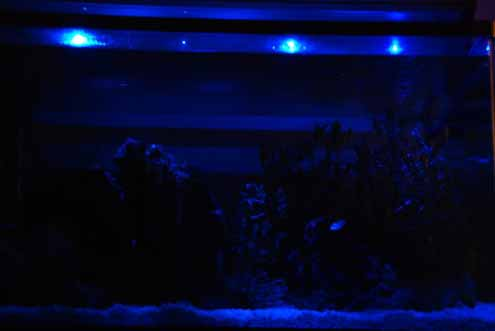

DIY Moonlight’s
HOW TO MAKE YOUR VERY OWN DIY MOONLIGHTS

Moonlights are one of the most attractive parts of an established aquarium but
they can be expensive, hard to source and often not customized to your aquariums
dimensions or personal taste. LED moonlights can often cost upwards of $50 for what
is essentially nothing more than a few resistors and blue LEDS.
This guide will explain how to make your very own set of DIY, moonlights,
not only do they look amazing but you can customize both the brightness and
number to suit your aquarium and personal taste.
Before beginning it
is important to realize this is an electronic project and working with
electronics always carries the risk of electrocution. Make sure to use
take appropriate precautions and have your project approved by an electrician
before use.
Moonlight Check List
- Soldering Iron
- Lead free solder
- 10ft Red 1-2/16" Insulated Copper Wire
- 10ft Black 1-2/16" Insulated Copper Wire
- 5/10/12V DC adapter
- 1ft 3/16" Shrink Wrap Tubing
- Resistors (Calculator Below)
- Plastic Zip Ties
- 470-480nm 3.3V LEDS ~ 5000MCD
- 3/16" Aluminum heat sink (length of aquarium)

Choosing the Correct Parts
- Since this article was first written LED strips are now available and are very
easy to use. Alternatively to wiring your own 'strips' it is possible to purchase
these and directly stick them to a metal heat sink. Soldering is only required on
one end to the DC adapter. Ensure the LEDS are between 470-480nm in color and have
a low MCD brightness rating.
- Otherwise continue with this guide. It is
recommended to have no more than 2 LEDs per foot of aquarium length.
This can change for extremely deep or wide aquariums and also for lower
brightness LEDs (i.e 1000MCD).
- 5 LED's is a good choice for a
standard 55 gallon 3 foot aquarium. Most LED's will have a forward
voltage of 3.3V and a max current of 20-35mA but this can be variable
so be sure to check the LED description.

- Purchase your LED's online or locally and then use
this helpful calculator to find which resistors will be required and the
appropriate layout. Either purchase an adapter and enter this DC voltage or enter
the the DC voltage of a suitable unused adapter that you own. An adapter from 5-12V
that can easily be customized will be a suitable choice.
- Purchase at least
two of each resistor. They can sometimes be faulty, lost or damaged. The initial
cost of purchasing more far outweighs being stuck without a very cheap component
.

Wiring the Moonlights
- After using the calculator print our your desired circuit
and make a mental model of how you will connect the LED's in series and
parallel relevant to the diagram.
- Take your DC adapter and cut
the end off the extension cable. Split the wire into positive and
negative and use a wire stripper (or carefully with a sharp knife)
to expose the last 1/3" of copper wire.
- Cut a length of black and red copper insulated wire long enough to
reach from the adapter to the top of the aquarium with some extra room.
Strip both ends of the wire. Solder one end of the red and black wires
to the DC adapters positive and negative outputs. Use shrink wrap and a
hair dryer to hide the exposed connection.
- Draw a basic diagram of how each resistor will connect to the positive wire,
the LED and the negative wire. Once understood cut the positive and negative wires
in their respective locations and use a wire stripper to expose the copper wire beneath.
- When soldering the resistors and especially the LED's it is important to only
apply heat from the soldering iron for up to 2 seconds at a time. Any longer can burn
out the LED.
- After each solder, use a small length of shrink wrap and a hair
dryer to close the exposed connections. Electrical tape will also work for this
purpose.

Installing Moonlights
- Using the zip ties, the moonlights can then be attached to a long aluminum heat sink or metal bar. This will help dissapate any heat generated by the LEDs and prevent them from burning out.
- They can also be attached directly to a lighting setup using electrical tape or zip ties. They can be run along the back edge of a T5 setup out of view